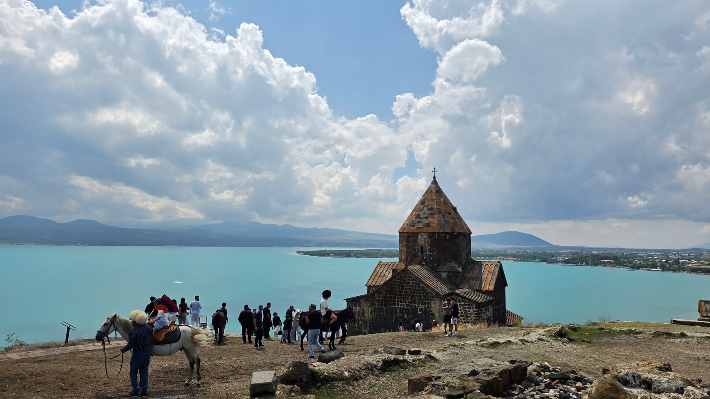
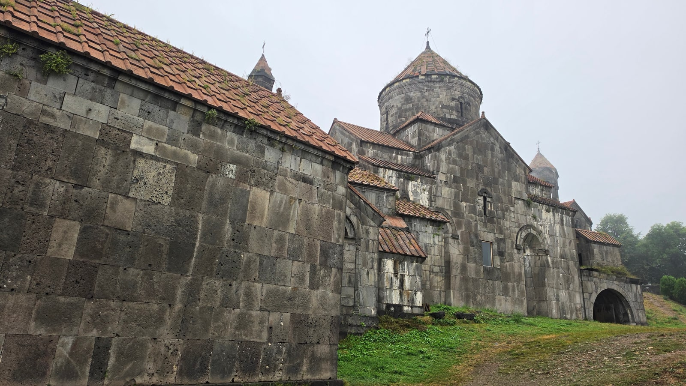
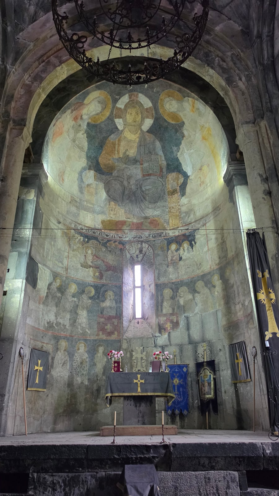
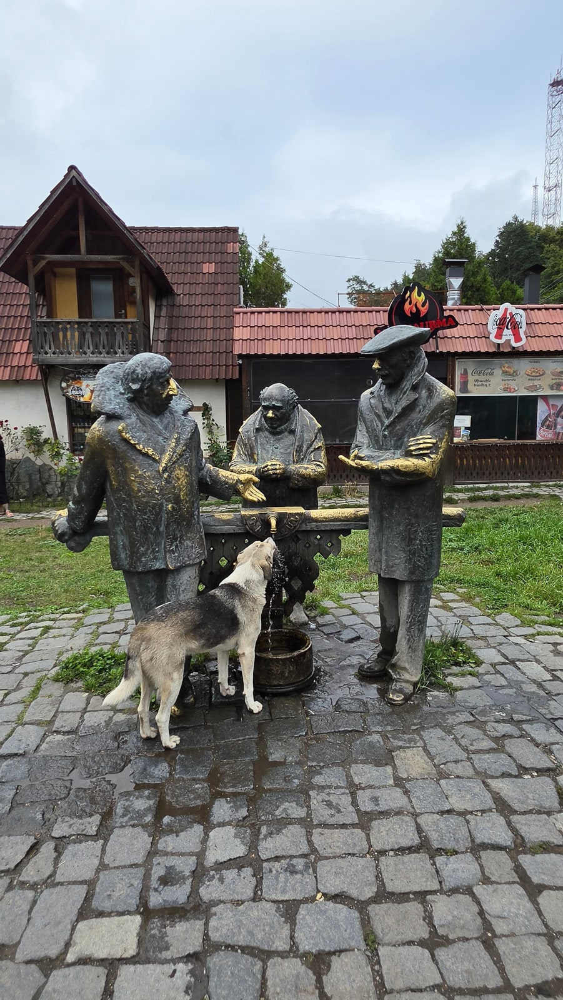
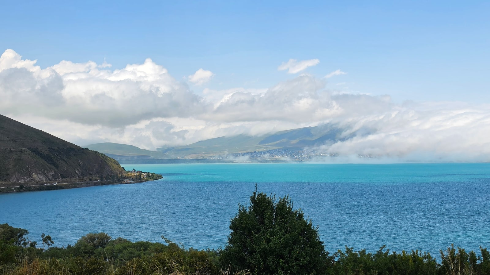
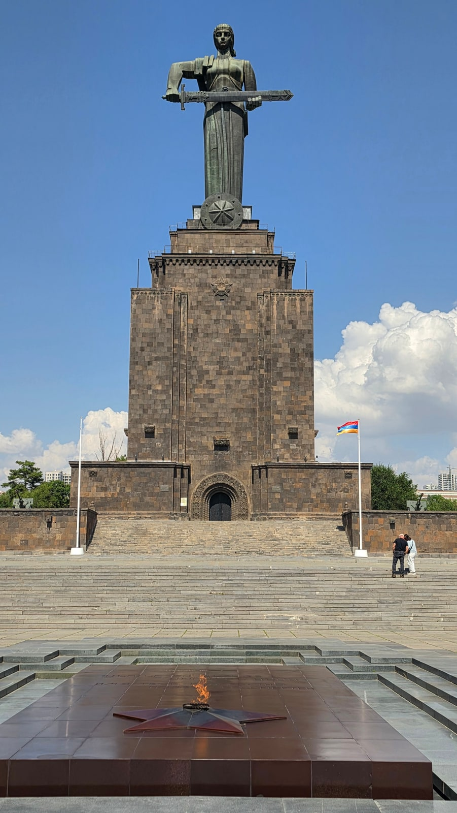
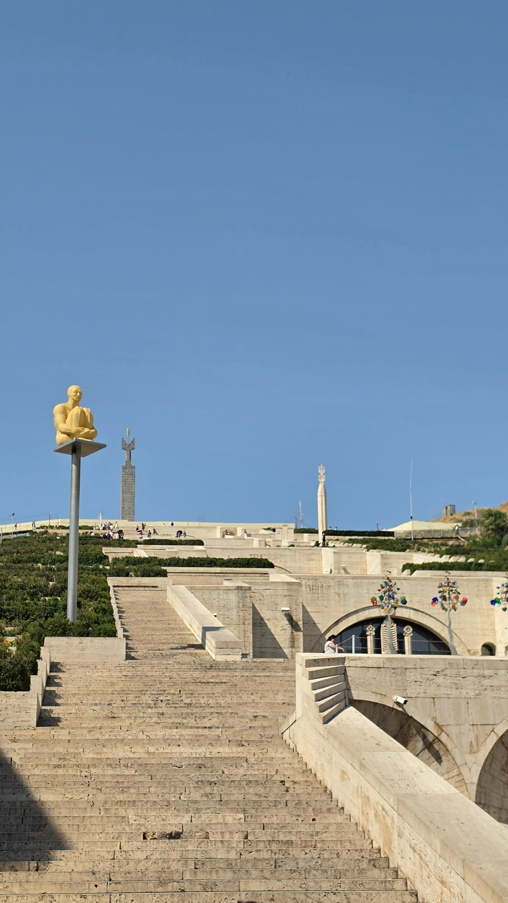
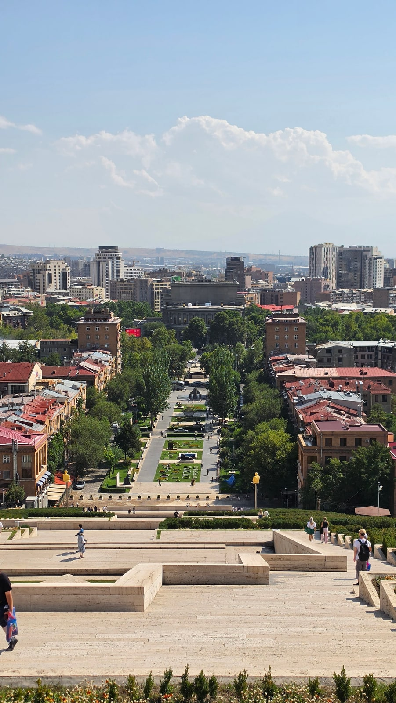
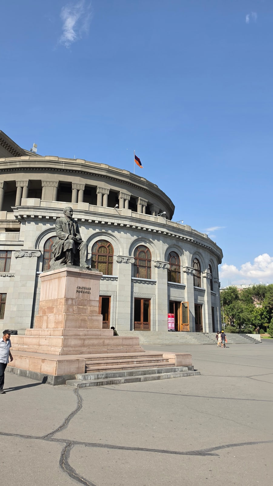

<meta charset="utf-8">
<title>트빌리시 출발 아르메니아 당일치기 — 세반 호수·예레반 — 나의 투자 그리고 행복한 여행</title>
<meta name="description" content="트빌리시 출발 아르메니아 당일 투어(118,800원) 실제 타임라인: 하그파트, 딜리잔, 세반 호수, 예레반 캐스케이드. 한국인 무비자 180일.">
<meta name="viewport" content="width=device-width, initial-scale=1">
<link rel="canonical" href="https://danielmoon82.github.io/moon/posts/armenia-daytrip-from-tbilisi-2026-09-14.html">
<link rel="preconnect" href="https://fonts.googleapis.com">
<link rel="preconnect" href="https://fonts.gstatic.com" crossorigin>
<link rel="stylesheet" href="https://fonts.googleapis.com/css2?family=Hahmlet:wght@400;600;800&family=IBM+Plex+Mono:wght@400;500&family=IBM+Plex+Sans+KR:wght@300;400;500;600&display=swap">

<style>
  :root{
    --paper:#F2EEE6;--surface:#FAF8F3;--surface-2:#E7E1D5;
    --ink:#191510;--ink-2:#4A4235;--ink-3:#7D7364;
    --line:#D6CEBF;--line-soft:#E4DDD0;--accent:#B06A15;--accent-bright:#C2761A;
    --up:#E5484D;--down:#3B82F6;
    --f-display:"Hahmlet",'Nanum Myeongjo',"Apple SD Gothic Neo",serif;
    --f-body:"IBM Plex Sans KR","Apple SD Gothic Neo","Malgun Gothic",sans-serif;
    --f-mono:"IBM Plex Mono","SFMono-Regular",Consolas,monospace;
    --pad:clamp(20px,5vw,64px);
  }
  @media (prefers-color-scheme:dark){
    :root:not([data-theme="light"]){
      --paper:#0B1120;--surface:#121A2C;--surface-2:#1A2439;
      --ink:#E9EEF7;--ink-2:#A9B5C9;--ink-3:#72809A;
      --line:#26314A;--line-soft:#1D2739;--accent:#E8A33D;--accent-bright:#F0B45C;
    }
  }
  *{box-sizing:border-box;}
  body{margin:0;background:var(--paper);color:var(--ink);font-family:var(--f-body);
    font-weight:300;font-size:1rem;line-height:1.75;-webkit-font-smoothing:antialiased;}
  a{color:inherit;}
  img{max-width:100%;height:auto;}
  .wrap{max-width:760px;margin:0 auto;padding-inline:var(--pad);}
  .nav{position:sticky;top:0;z-index:20;background:color-mix(in srgb,var(--paper) 88%,transparent);
    backdrop-filter:saturate(180%) blur(12px);border-bottom:1px solid var(--line);}
  .nav-in{display:flex;align-items:center;justify-content:space-between;height:58px;}
  .brand{font-family:var(--f-display);font-weight:600;font-size:1rem;letter-spacing:-.02em;text-decoration:none;}
  .back{font-family:var(--f-mono);font-size:.72rem;color:var(--ink-3);text-decoration:none;}
  .article{padding-block:clamp(40px,7vw,72px) clamp(56px,9vw,96px);}
  .eyebrow{font-family:var(--f-mono);font-size:.68rem;letter-spacing:.16em;text-transform:uppercase;
    color:var(--accent);margin:0 0 14px;}
  h1{font-family:var(--f-display);font-weight:800;font-size:clamp(1.6rem,4.4vw,2.3rem);
    line-height:1.3;letter-spacing:-.03em;margin:0 0 16px;}
  .byline{font-family:var(--f-mono);font-size:.72rem;color:var(--ink-3);
    padding-bottom:24px;border-bottom:1px solid var(--line);margin-bottom:32px;}
  h2{font-family:var(--f-display);font-weight:600;font-size:1.25rem;letter-spacing:-.02em;margin:42px 0 14px;}
  h3{font-family:var(--f-display);font-weight:600;font-size:1.05rem;letter-spacing:-.02em;
    margin:30px 0 10px;padding-top:14px;border-top:1px solid var(--line-soft);}
  h3 .code{font-family:var(--f-mono);font-size:.7rem;font-weight:400;color:var(--ink-3);margin-left:6px;}
  p{margin:0 0 18px;color:var(--ink-2);}
  ul.checks{margin:0 0 18px;padding-left:20px;color:var(--ink-2);}
  ul.checks li{margin-bottom:8px;font-size:.94rem;}
  table{width:100%;border-collapse:collapse;font-size:.88rem;margin-bottom:8px;}
  th{font-family:var(--f-mono);font-size:.66rem;letter-spacing:.06em;text-transform:uppercase;
    color:var(--ink-3);text-align:right;padding:8px 6px;border-bottom:1px solid var(--line);}
  th:first-child{text-align:left;}
  td{padding:10px 6px;border-bottom:1px solid var(--line-soft);color:var(--ink-2);}
  td.num{font-family:var(--f-mono);text-align:right;font-variant-numeric:tabular-nums;}
  td.up{color:var(--up);} td.down{color:var(--down);}
  .scroll{overflow-x:auto;}
  figure{margin:22px 0;}
  figure img{display:block;border-radius:3px;background:var(--surface-2);}
  figcaption{margin-top:8px;font-family:var(--f-mono);font-size:.68rem;color:var(--ink-3);text-align:center;}
  .note{margin-top:34px;padding:16px 18px;border-left:3px solid var(--accent);
    background:var(--surface);border-radius:0 3px 3px 0;}
  .note p{margin:0;font-size:.85rem;color:var(--ink-3);}
  .foot{border-top:1px solid var(--line);background:var(--surface);padding-block:30px 38px;}
  .foot p{margin:0;font-size:.8rem;color:var(--ink-3);}
</style>

<nav class="nav">
  <div class="wrap nav-in">
    <a class="brand" href="../index.html">나의 투자 그리고 행복한 여행</a>
    <a class="back" href="../index.html#stocks">← 시황으로</a>
  </div>
</nav>

<main class="wrap article">
  <p class="eyebrow">Market</p>
  <h1>아르메니아 당일 투어 기록 (2026.8.17) — 경유지 시각과 입국 정보</h1>
  <p class="byline">여행 · 2026-09-14 기준</p>

  <p>한 줄 요약: 클룩 조인 투어(118,800원)로 하그파트(09:31) → 딜리잔(11:33) → 세반 호수(13:09) → 예레반(14:47~16:26)을 돌고 23:09 트빌리시에 돌아왔습니다.</p>
  <p>시각은 사진 촬영 시각입니다(두 나라 모두 UTC+4). 명소 정보는 위키백과, 한국인 입국 조건은 외교부 재외공관 공지를 참고했습니다.</p>
  <p>※ 이 글에는 클룩 제휴 링크가 들어 있습니다. 링크를 통해 예약하시면 글쓴이가 일정 수수료를 받을 수 있으며, 예약하시는 가격은 같습니다.</p>
  <figure><figcaption>세반 호수 위 반도에 선 세바나방크 수도원 (2026.8.17 13:24 촬영)</figcaption></figure>
  <h2>이날 타임라인</h2>
  <ul class="checks">
    <li>09:31~09:41  하그파트 수도원 (아르메니아 북부 로리주)</li>
    <li>11:33~11:36  딜리잔 — 미미노 기념상, 작은 호수</li>
    <li>13:09~13:32  세반 호수, 세바나방크 수도원</li>
    <li>14:47~14:54  예레반 — 어머니 아르메니아 상</li>
    <li>15:18~15:54  예레반 — 캐스케이드</li>
    <li>16:12~16:26  예레반 — 오페라 극장, 북부 대로</li>
    <li>16:26~21:24  (사진 없음 — 귀환 이동)</li>
    <li>21:24~21:43  조지아 쪽 국경 검문소</li>
    <li>23:09  트빌리시 구시가지 도착</li>
  </ul>
  <p>출발 시각은 기록이 없지만, 9시 31분에 이미 아르메니아 안의 하그파트에 있었으니 이른 아침에 출발해 국경을 넘은 셈입니다.</p>
  <div class="note"><p>사진 구간을 합치면 예레반 밖 관광이 1시간 반, 예레반 시내가 1시간 40분 정도입니다. 나머지는 이동과 국경 통과입니다. '하루에 두 나라'라는 말의 실제 모습입니다.</p></div>
  <h2>09:31 하그파트 수도원 — 첫 번째 정차</h2>
  <figure><figcaption>아르메니아 로리주의 하그파트 수도원 (2026.8.17 09:31 촬영)</figcaption></figure>
  <p>아르메니아 북부 데베드강 계곡 위에 있는 하그파트 수도원은 976년경 세워졌습니다. 가까운 사나힌 수도원과 함께 1996년 유네스코 세계유산에 올랐습니다.</p>
  <figure><figcaption>하그파트 본당 제단 위의 그리스도 판토크라토르 프레스코 (2026.8.17 09:34 촬영)</figcaption></figure>
  <p>본당 안에 들어가면 제단 위쪽에 그리스도 판토크라토르 프레스코가 남아 있습니다. 밖에는 1245년에 지은 독립된 종탑이 있습니다. 10분 정도 머물렀습니다.</p>
  <h2>11:33 딜리잔 — 미미노 기념상</h2>
  <figure><figcaption>딜리잔의 미미노 기념상. 옆에 동네 개가 앉아 있습니다 (2026.8.17 11:33 촬영)</figcaption></figure>
  <p>숲이 많아 '아르메니아의 스위스'로 불리는 딜리잔에서 잠깐 섰습니다. 1977년 영화 '미미노'의 세 인물을 청동으로 만든 기념상이 있습니다. 아르메니아·조지아·러시아 사람의 우정을 그린 영화라, 조지아에서 출발한 투어의 정차지로 잘 어울립니다.</p>
  <p>3분 뒤인 11시 36분에는 초록 언덕에 둘러싸인 작은 호수 사진이 있습니다. 짧게 스쳐 간 곳입니다.</p>
  <h2>13:09 세반 호수와 세바나방크</h2>
  <figure><figcaption>세바나방크 반도에서 본 세반 호수의 청록색 물 (2026.8.17 13:17 촬영)</figcaption></figure>
  <p>이 투어의 대표 풍경입니다. 세반 호수는 아르메니아에서 가장 큰 호수로, 물빛이 청록색입니다.</p>
  <p>호수 북서쪽 반도에 874년에 세운 세바나방크 수도원이 있습니다. 원래 섬이었는데 소련 시절 물을 끌어 쓰면서 수위가 약 20m 내려가 반도가 됐습니다. 언덕 위에 작은 돌 교회 두 채가 있습니다.</p>
  <p>올라가는 길에는 함께 사진을 찍을 수 있는 말과 그림을 파는 사람이 있었습니다. 사진 기준 23분 정도 머물렀는데, 올라가서 둘러보고 내려오기에 적당한 시간이었습니다.</p>
  <h2>14:47 예레반 — 어머니 아르메니아, 캐스케이드, 오페라</h2>
  <figure><figcaption>승리공원의 어머니 아르메니아 상과 영원의 불꽃 (2026.8.17 14:47 촬영)</figcaption></figure>
  <p>예레반 첫 정차는 승리공원의 어머니 아르메니아 상입니다. 1967년, 스탈린 동상이 있던 자리에 세웠습니다. 동상 높이 22m, 받침대를 포함하면 51m이고, 받침대 안은 군사박물관입니다.</p>
  <figure><figcaption>테라스와 조각이 층층이 이어진 예레반 캐스케이드 (2026.8.17 15:27 촬영)</figcaption></figure>
  <p>다음은 캐스케이드. 흰 계단식 테라스가 약 570계단 이어진 거대한 구조물이고, 안에 카페시안 미술관이 있습니다. 내부에 에스컬레이터가 있어서 여름 오후에도 꼭대기까지 오를 수 있습니다. 아래 정원에는 페르난도 보테로의 조각 등 현대 조각이 놓여 있습니다.</p>
  <figure><figcaption>캐스케이드 위에서 내려다본 예레반 (2026.8.17 15:35 촬영)</figcaption></figure>
  <p>꼭대기에서는 예레반 중심가가 일직선으로 내려다보입니다. 맑은 날에는 아라랏산도 보인다고 하는데, 제 사진에는 나오지 않습니다.</p>
  <figure><figcaption>예레반 오페라 극장 (2026.8.17 16:22 촬영)</figcaption></figure>
  <p>마지막은 오페라 극장과 보행자 거리인 북부 대로였습니다. 예레반에서의 마지막 사진이 16시 26분입니다.</p>
  <p>참고로 예레반에서 2026년 10월 19~30일 유엔 생물다양성협약 당사국총회(COP17)가 열립니다. 이 시기에 간다면 숙소를 일찍 잡는 게 좋습니다.</p>
  <h2>한국인 아르메니아 입국 — 비자 필요 없습니다</h2>
  <ul class="checks">
    <li>한국 국민은 2018년 3월 19일부터 아르메니아에 무비자로 입국할 수 있습니다</li>
    <li>체류 한도는 최초 입국일부터 1년 동안 합계 180일입니다</li>
    <li>투어로 가도 국경에서 여권 심사를 받습니다. 여권을 꼭 챙기세요</li>
    <li>조지아와 아르메니아는 시간대가 같아(UTC+4) 시계를 바꿀 필요가 없습니다</li>
  </ul>
  <p>입국 조건은 바뀔 수 있으니 출발 전에 외교부 해외안전여행(0404.go.kr)이나 주아르메니아 공관 공지를 확인하세요.</p>
  <h2>이 투어가 맞는 사람, 안 맞는 사람</h2>
  <p>맞는 경우입니다.</p>
  <ul class="checks">
    <li>조지아 일정 중 하루 여유가 있고, 한 나라를 더 넣고 싶은 경우</li>
    <li>예레반을 깊이 보기보다 대표 명소만 훑어도 괜찮은 경우</li>
    <li>국경 통과와 이동을 알아서 처리해 주는 편안함이 중요한 경우</li>
  </ul>
  <p>안 맞는 경우입니다.</p>
  <ul class="checks">
    <li>차 안에 오래 있는 게 힘든 경우 — 이날은 이른 아침부터 밤 11시가 넘도록 이어졌습니다</li>
    <li>예레반 자체가 목적인 경우 — 1시간 40분은 맛보기입니다. 1~2박을 하는 편이 낫습니다</li>
    <li>예산을 아끼는 경우 — 118,800원으로, 카헤티 투어(22,400원)의 다섯 배가 넘습니다</li>
  </ul>
  <div style="text-align:center;margin:30px 0"><a href="https://affiliate.klook.com/redirect?aid=135164&aff_adid=1430623&k_site=https%3A%2F%2Fwww.klook.com%2Fko%2Factivity%2F141780-discover-armenia-tbilisi-akhpat-dilijan-sevan-yerevan-tbilisi%2F" target="_blank" rel="nofollow sponsored noopener" style="display:inline-block;padding:15px 28px;background:#E34948;color:#fff;font-weight:700;font-size:18px;text-decoration:none;border-radius:8px"><b>▶ 클룩에서 제가 예약한 아르메니아 투어 보기 (제휴 링크)</b></a></div>
  <p>투어 다음 날 일정은 가볍게 잡는 편이 좋습니다.</p>
  <h2>자주 묻는 질문</h2>
  <p><b>트빌리시에서 아르메니아 당일치기가 가능한가요?</b></p>
  <p>가능합니다. 다만 매우 긴 하루입니다. 제 경우 오전 9시 31분 하그파트에서 시작해 밤 11시 9분에 트빌리시로 돌아왔습니다.</p>
  <p><b>한국인은 아르메니아 비자가 필요한가요?</b></p>
  <p>필요 없습니다. 2018년 3월 19일부터 무비자로 1년에 합계 180일까지 체류할 수 있습니다. 여권은 꼭 필요합니다.</p>
  <p><b>투어 가격은 얼마인가요?</b></p>
  <p>제가 클룩에서 예약한 세반 호수 &amp; 예레반 시티 일일 투어는 1인 118,800원이었습니다(2026년 8월 여행, 예약 당시 가격).</p>
  <p><b>예레반에서 얼마나 머무나요?</b></p>
  <p>제 사진 기준 14시 47분부터 16시 26분까지, 1시간 40분 정도였습니다. 어머니 아르메니아, 캐스케이드, 오페라 극장을 차례로 들렀습니다.</p>
  <h2>정리하면</h2>
  <p>트빌리시 출발 아르메니아 당일 투어는 '한 나라를 하루에 훑는' 상품입니다. 수도원, 호수, 수도를 다 보지만 대부분의 시간은 차 안입니다.</p>
  <p>일정이 짧은데 아르메니아를 꼭 보고 싶다면 좋은 선택이고, 예레반을 제대로 보고 싶다면 1박을 하는 편이 낫습니다.</p>
  <div style="text-align:center;margin:30px 0"><a href="https://danielmoon82.github.io/moon/posts/kakheti-wine-tour-2026-09-14.html" target="_blank" rel="nofollow sponsored noopener" style="display:inline-block;padding:15px 28px;background:#E34948;color:#fff;font-weight:700;font-size:18px;text-decoration:none;border-radius:8px"><b>▶ 카헤티 와인 투어 기록 보기</b></a></div>
  <div style="text-align:center;margin:30px 0"><a href="https://danielmoon82.github.io/moon/posts/georgia-travel-guide-2026-09-14.html" target="_blank" rel="nofollow sponsored noopener" style="display:inline-block;padding:15px 28px;background:#E34948;color:#fff;font-weight:700;font-size:18px;text-decoration:none;border-radius:8px"><b>▶ 조지아 여행 준비 총정리 보기</b></a></div>
  <p style="font-size:12px;color:#999;line-height:1.6;margin-top:36px">방문 날짜와 시각은 2026년 8월 12~20일 여행 중 찍은 사진의 촬영 시각(조지아 현지 시각)으로 확인했습니다. 요금·운영 정보는 2026년 9월 13~14일에 확인한 공개 정보이며 바뀔 수 있습니다. 원화 환산은 조지아 중앙은행 2026년 8월 14일 환율(1,000원 = 1.8403라리)로 계산한 대략치입니다. 투어 금액은 2026년 8월 여행 때 클룩에서 결제한 실제 금액입니다. 명소 정보는 위키백과, 한국인 무사증 입국 조건은 외교부 재외공관 공지를 참고했습니다. 입국 조건은 출발 전 다시 확인하시기 바랍니다.</p>
</main>

<footer class="foot">
  <div class="wrap"><p>나의 투자 그리고 행복한 여행 · 투자 판단의 참고 자료일 뿐, 매수·매도를 권유하지 않습니다.</p></div>
</footer>
